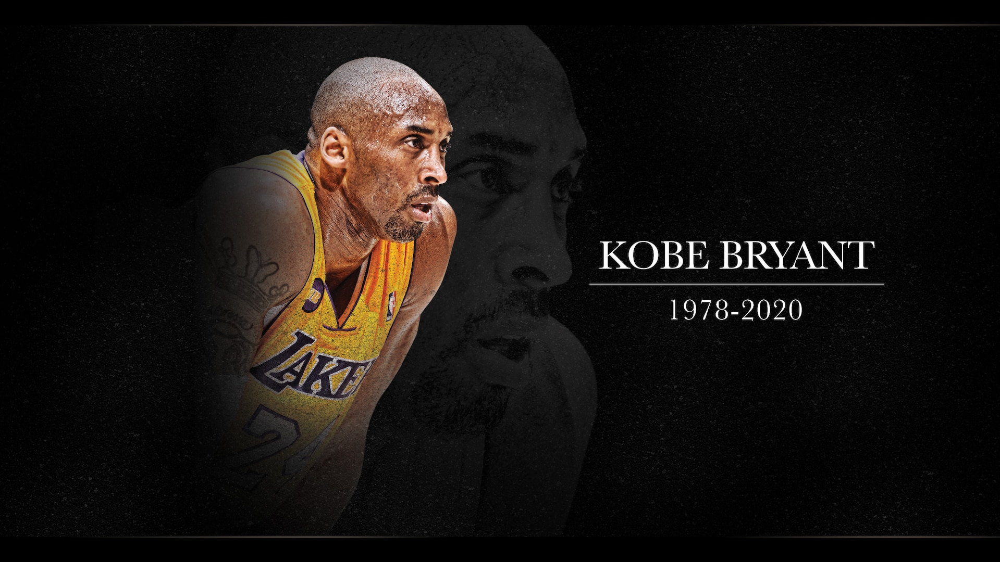

Football is the most loved,watched and enjoyable game for all. people also play it most of the time. they enjoy playing it with their friends and playmates.footnall was first played in england.then FIFA, International Federation of Association Football,was established in 21st May,1904. It is a non-profit organization that describes itself as an international governing body of association football, futsal and beach soccer. It is the highest governing body of association football.Headquartered in Zürich, Switzerland, its membership now comprises 211 national associations.

These national associations must each also be members of one of the six regional confederations into which the world is divided:Africa, Asia, Europe, North & Central America and the Caribbean, Oceania and South America. it organizes the world cup every four years later.football unites a nation again divides two nation. the hype brazil vs argentina match is the most seen. not only their own countries but also people from many other countries also take part in this hype. there is a very much enthusiasm among till the last whistle of the referre. both teams are strong but the best one to play wins the match. the best players in this nation presently are Neymar for Brazil and Messi for argentina.there is also another player who is the highest goalscorer in the world at present time according to FIFA He is none other than Cristiano Ronaldo. he plays for portugal. but according to Guiness book of World Records Pele is the highest goalscorer in the world. he is a retired brazillian footballer and the greatest legend of football. everybody has their own perspective in this.and everybody has their own favourite player also.football is game which gives us physical as well as mental reliance.
Neymar

Ronaldo

Pele
the second most watched and played game in this world is cricket. the british were the inventor of this beautiful game.it is also called the game of gentlemen. all international cricket matches are controlled by ICC .

The International Cricket Council (ICC) is the world governing body of cricket. It was founded as the Imperial Cricket Conference in 1909 by representatives from Australia, England and South Africa. It was renamed as the International Cricket Conference in 1965, and took up its current name in 1987. The ICC has its headquarters in Dubai, UAE. The ICC has 105 member nations currently: 12 Full Members that play Test matches, and 94 Associate Members.[4] The ICC is responsible for the organisation and governance of cricket's major international tournaments, most notably the Cricket World Cup and the T20 World Cup. It also appoints the umpires and referees that officiate at all sanctioned Test matches, One Day Internationals and Twenty20 Internationals. It promulgates the ICC Code of Conduct, which sets professional standards of discipline for international cricket, and also co-ordinates action against corruption and match-fixing through its Anti-Corruption and Security Unit (ACSU). The ICC does not control bilateral fixtures between member countries (which include all Test matches), and neither does it govern domestic cricket within member countries. It does not make or alter the laws of the game, which have remained under the governance of the Marylebone Cricket Club since 1788. there are many renowned players in cricket also who are loved by thousands. Shakib Al Hassan is my favourite player. there are also M.S Dhoni and Steven Smith. and Sachin Tendulkar is also known as the G.O.A.T of cricket.

Shakib Al Hasan
M.S Dhoni
Steven Smith
Sachin Tendulkar
basket is also a very popular and most played game.it is also a very competitive game like football and cricket.it is observed by FIBA.
The International Basketball Federation is an association of national organizations which governs the sport of basketball worldwide. Originally known as the Fédération Internationale de Basketball Amateur (hence FIBA), in 1989 it dropped the word amateur from its name but retained the acronym. FIBA defines the rules of basketball, specifies the equipment and facilities required, organises international competitions, regulates the transfer of athletes across countries, and controls the appointment of international referees. A total of 213 national federations are now members, organized since 1989 into five zones: Africa, Americas, Asia, Europe, and Oceania. FIBA organizes both the men's and women's FIBA World Olympic Qualifying Tournament and the Summer Olympics Basketball Tournament, which are sanctioned by the IOC.[4] The FIBA Basketball World Cup is a world tournament for men's national teams held every four years. Teams compete for the Naismith Trophy, named in honor of basketball's American-Canadian creator James Naismith. The tournament structure is similar but not identical to that of the FIFA World Cup in association football; these tournaments occurred in the same year from 1970 through 2014, but starting in 2019, the Basketball World Cup will move to the year following the FIFA World Cup. A parallel event for women's teams, the FIBA Women's Basketball World Cup, is also held quadrennially; from 1986 through 2014, it was held in the same year as the men's event but in a different country. there are also many good players in basketball. my favourites are LeBron James and Kobe Bryant. Michael Jordan and Kareem Abdul Jabbar are the legends of this game. this plalyers are in top 10 of scoring most point in NBA

LeBron James
Kobe Bryant

Michael Jordan
Kareem Abdul Jabbar